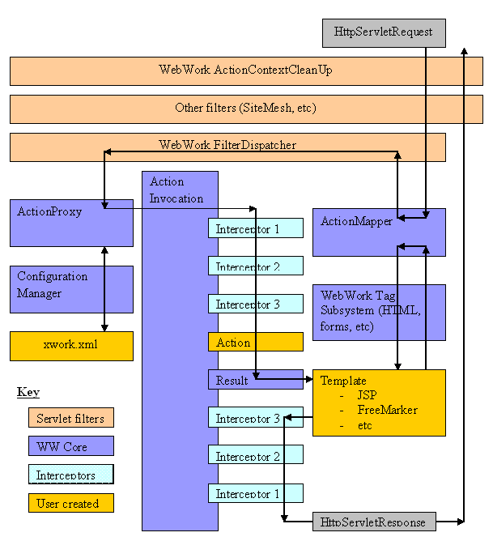

The WebWork architecture can best be explained with a diagram:

In the diagram, an initial request goes to the Servlet container (such as Tomcat or Resin), the request goes through the standard filter chain. This includes the (optional) ActionContextCleanUp filter, which is required if you wish to integrate in with technologies such as SiteMesh. Next, the required FilterDispatcher is called, which in turn consults the ActionMapper to determine if the request should invoke an action.
If the ActionMapper determines that an action should be invoked, the FilterDispatcher than delegates to the ActionProxy, which in turn consults the WebWork Configuration Files manager, which finally reads your xwork.xml file. Next, the ActionProxy creates an ActionInvocation, which is responsible for the command pattern implementation. This includes invoking any interceptors (the before() method) before finally invoking the action itself.
Once the action returns, the ActionInvocation is responsible for looking up the proper result associated with the action result code mapped in xwork.xml. The result is then executed, which often (but not always, as is the case for Action Chaining) involves a template written in JSP or FreeMarker to be rendered. While rendering, the templates can utilize the Tags provided by WebWork. Some of those components will work with the ActionMapper to render proper URLs for additional requests.
| All objects in this architecture (action, result, interceptor, etc) are created by an ObjectFactory. This ObjectFactory is pluggable and is how frameworks like Spring and Pico integrate. You can also provide your own ObjectFactory for any reason that requires knowing when objects in WebWork are created. |
Finally, the interceptors are executed again (in reverse order, calling the after() method) and finally returning back through the filters configured in web.xml. If the ActionContextCleanUp filter is present, the FilterDispatcher will not clean up the ThreadLocal ActionContext. If the ActionContextCleanUp filter is not present, the FilterDispatcher will cleanup all ThreadLocals.